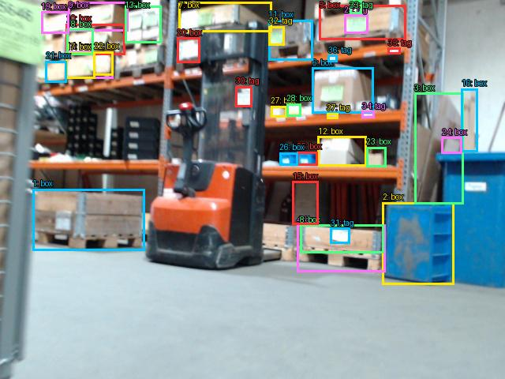

Prejšnji OD (shranjen)


Opis → phrase grounding (nov)

The image shows a forklift truck in a warehouse. The forklift is orange and black in color and is positioned in the center of the image. It is facing towards the right side of the frame and appears to be moving through the warehouse. In the background, there are shelves filled with cardboard boxes and pallets. On the left side, there is a blue bin and a green sign with writing on it. The floor is made of concrete and the walls are painted white.

Original · Caption raw · Grounding raw · Koordinate
Številke so lokalni ID regije. Dolge slikovne oznake so skrajšane; spodaj so celotne fraze. Napovedane regije se lahko prekrivajo ali opisujejo skupine.
| ID | Celotna fraza | bbox xyxy |
|---|---|---|
| 1 | The forklift | [182.72000122070312, 23.760000228881836, 344.6399841308594, 342.9599914550781] |
| 2 | shelves | [43.84000015258789, 2.1599998474121094, 529.5999755859375, 343.91998291015625] |
| 3 | pallets | [41.279998779296875, 236.87998962402344, 184.0, 317.03997802734375] |
| 4 | a blue bin | [550.719970703125, 188.87998962402344, 638.3999633789062, 365.5199890136719] |
| 5 | sign | [0.3199999928474426, 0.23999999463558197, 59.84000015258789, 85.19999694824219] |
| 6 | The floor | [10.559999465942383, 300.7200012207031, 637.1199951171875, 477.8399963378906] |
| 7 | concrete | [9.920000076293945, 301.67999267578125, 637.760009765625, 478.3199768066406] |
| 8 | walls | [559.0399780273438, 1.1999999284744263, 638.3999633789062, 192.239990234375] |